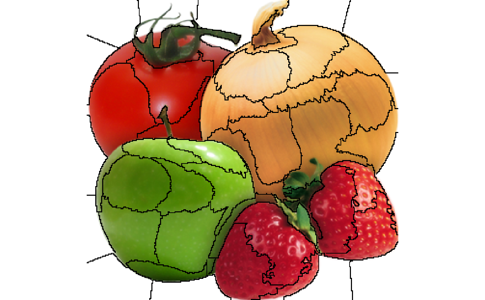

The segmentation of an image into superpixels are an important step in
generating explanations for image models. It is both important that the
segmentation is correct and follows meaningful patterns in the picture, but
also that the size/number of superpixels are appropriate. If the important
features in the image are chopped into too many segments the permutations
will probably damage the picture beyond recognition in almost all cases
leading to a poor or failing explanation model. As the size of the object of
interest is varying it is impossible to set up hard rules for the number of
superpixels to segment into - the larger the object is relative to the size
of the image, the fewer superpixels should be generated. Using
plot_superpixels it is possible to evaluate the superpixel parameters
before starting the time consuming explanation function.
plot_superpixels( path, n_superpixels = 50, weight = 20, n_iter = 10, colour = "black" )
| path | The path to the image. Must be readable by |
|---|---|
| n_superpixels | The number of superpixels to segment into |
| weight | How high should locality be weighted compared to colour. High values leads to more compact superpixels, while low values follow the image structure more |
| n_iter | How many iterations should the segmentation run for |
| colour | What line colour should be used to show the segment boundaries |
A ggplot object
image <- system.file('extdata', 'produce.png', package = 'lime') # plot with default settings plot_superpixels(image)# Test different settings plot_superpixels(image, n_superpixels = 100, colour = 'white')